PNU × AWS AI 마에스트로 · 6팀
분류 → 읽기 → 대조 → 다시 확인 → 정리
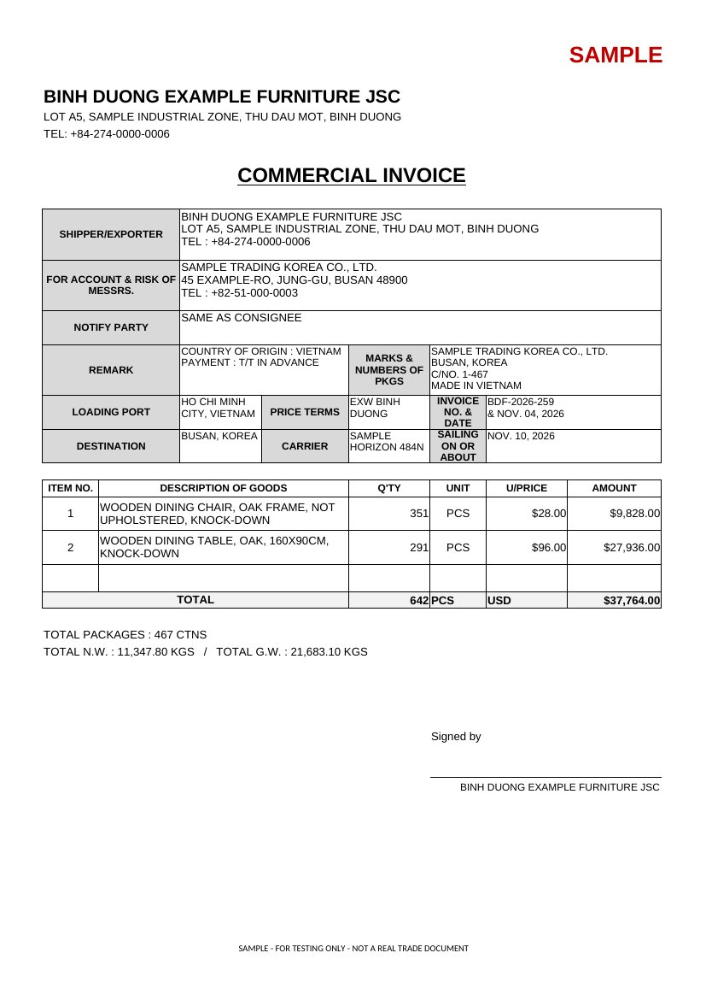
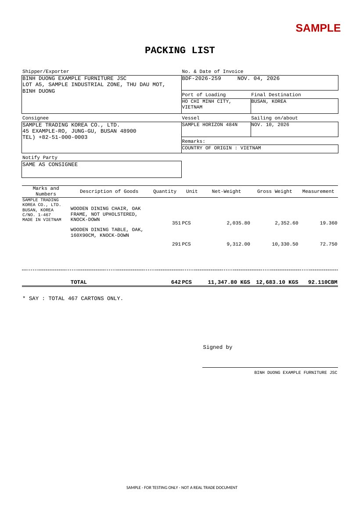
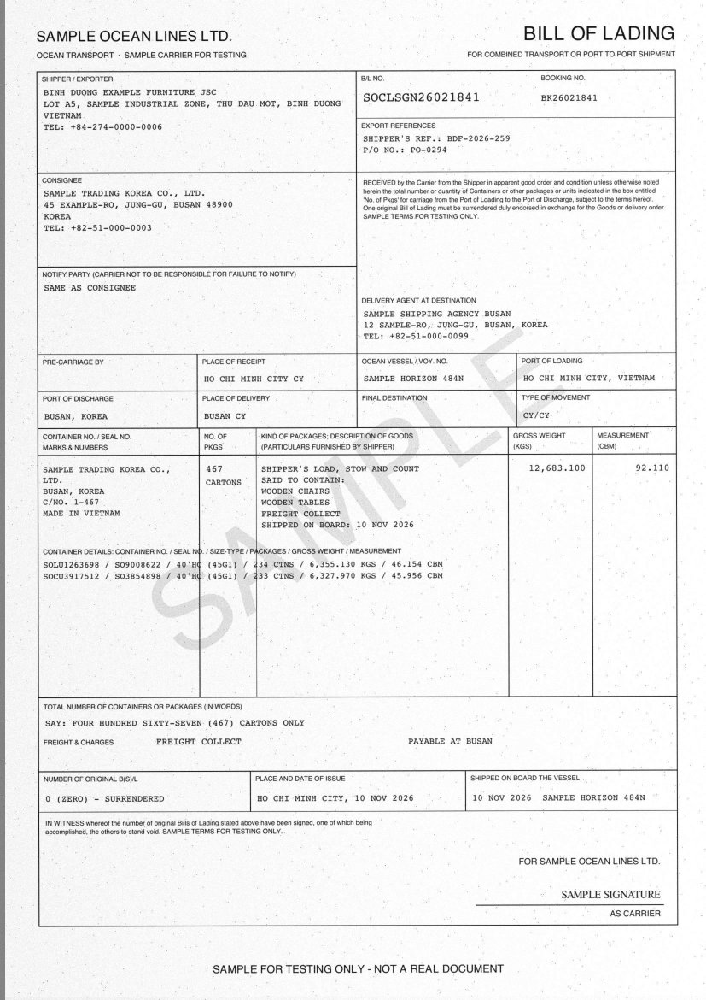
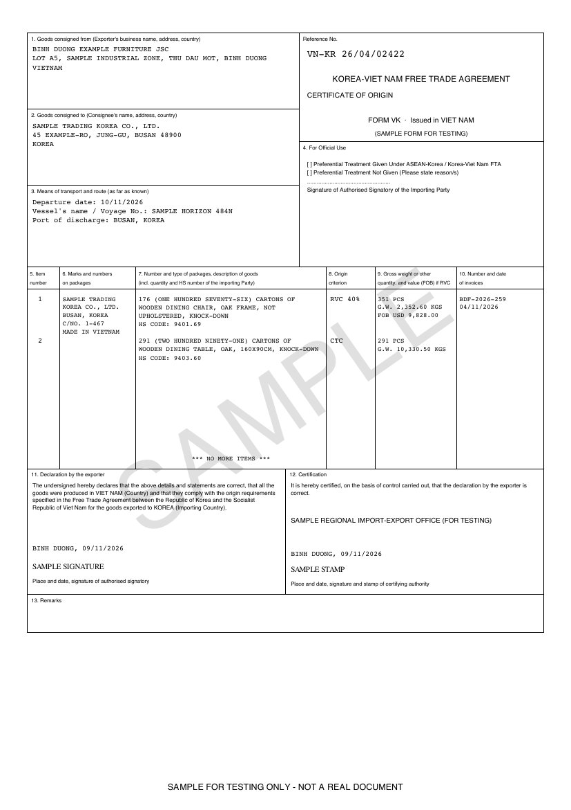
문제
종류를 가리고, 칸을 찾아서
서류끼리 값이 같은지
신고서에 옮기고, 틀리면 알리고
오래 걸리고, 한 칸을 놓치면 통관이 늦어집니다.
02두 가지 오류
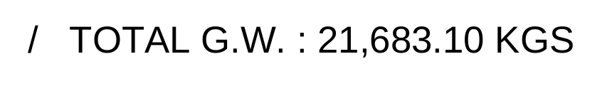
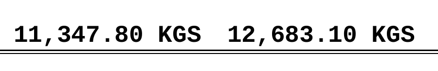
21,683.10 KGS ≠ 12,683.10 KGS
오류 신고 가운데 품목분류 오류
서류 그림은 개발용 합성 서류(D003 세트)의 실제 칸 · 74%: 관세청 발표 (연합뉴스 2025-02-20)
03해결
서류 종류를
가린다
칸마다
적힌 그대로
규칙 13개로
서류끼리
어긋난 칸만,
다른 방법으로
HS · 신고서 초안
· WMS 등록
사람 손 없이 WMS 등록까지
'다음 할 일'과 근거 문서를 붙여 사람에게
읽기는 AI/판정은 코드/예외만 사람
04시연영상 · 1분 38초
Enter로 재생
부산항 여는 장면 · ① 올리면 읽고 대조 · ② 틀린 칸 → HS 선택 → 신고서 초안 · ③ 대시보드 · ④ 말로 묻는 현황
핵심 ① 근거와 함께 읽고, 맞춰 본다
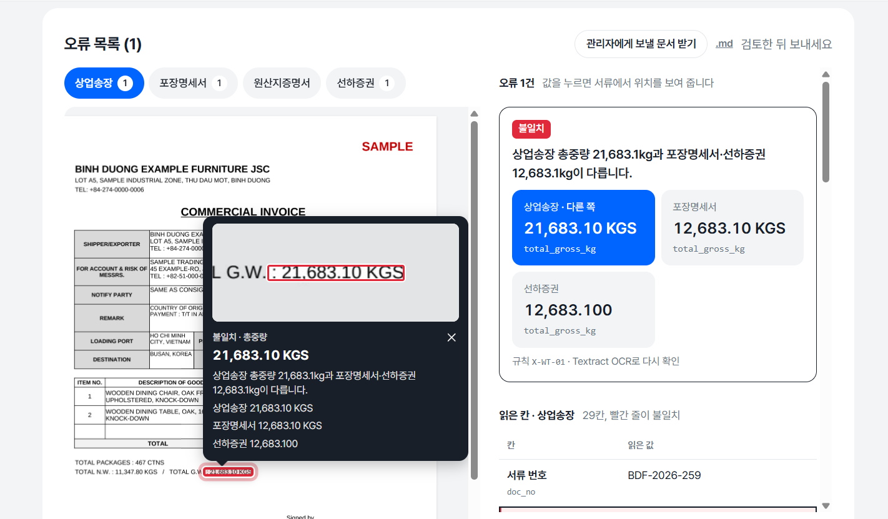
실제 작업 화면 · 개발용 합성 서류 D003 세트
값을 누르면 서류 위 그 자리를 크게 보여 줌
상업송장 21,683.10 · 포장명세서와 선하증권 12,683.10
핵심 ② 판정과 오류 검증
양식마다 규칙을
짜지 않아도 읽는다
같은 서류엔 늘 같은 판정,
규칙마다 출처
어긋난 칸만,
읽을 때와 다른 방법으로
짚은 46건 가운데 41건은 PDF 글자와 OCR로 다시 확인했습니다.
개발용 75세트를 끝까지 1회: 다시 확인 근거는 Textract 24 · PDF 글자 17 · 모델 다시 읽기 2 · 없음 3 · 모델 단독 비교는 같은 정답지로 1회
06핵심 ③ 규칙에 따라 정리
HS 코드 · AI는 후보와 이유, 확정은 사람 → 다음부터 자동
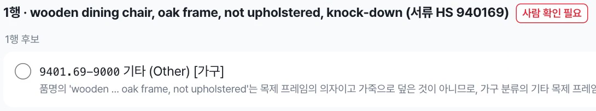
신고서 초안 · 코드가 채우고 칸마다 출처, 문제 칸은 비움
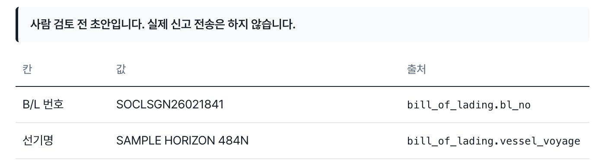
핵심 ④ 문서 자동화
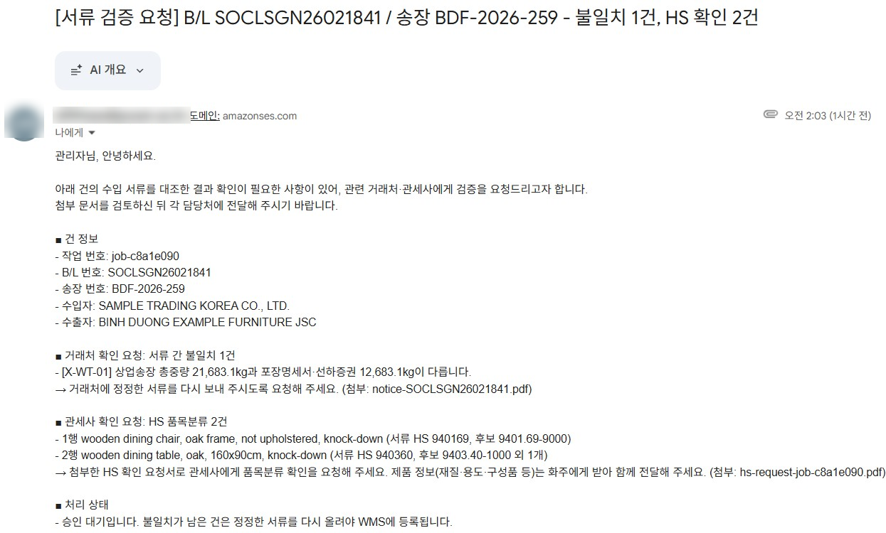
확인 요청 메일 · 누구에게 무엇을 요청할지
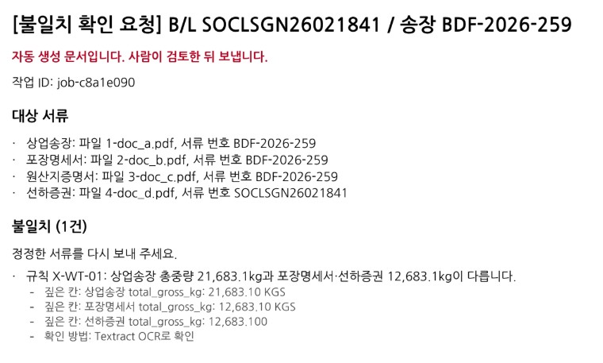
불일치 통지 · 거래처용
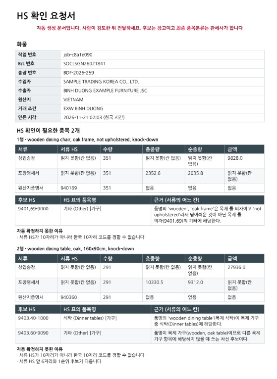
HS 확인 요청서 · 관세사용
검증
심은 오류를 찾음
정상 서류 오탐
같은 서류, 같은 판정
합성 서류 479장 · 개발용 75세트를 실제 판독으로 끝까지 1회 (오탐은 오류 없는 30세트 기준) · 같은 판정은 4세트 × 10회 · 분류, 읽기, 현황 질문은 기능별로 따로 잰 값 (부록)
09아키텍처 · AWS
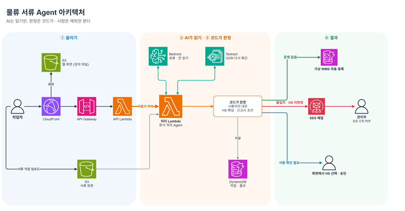
처리 Lambda 안에서 Strands Agent가 도구 6개를 골라 부름 · 모델 추론은 global 프로필, 서울에서 직접 부르는 모델로 분류와 읽기 15장의 결과가 같음을 확인
101건당 처리 비용
약 250원
1달러 1,400원 기준0.18달러: 개발용 75세트를 끝까지 1회 돌린 평균(모델 $0.169 + OCR $0.006), 토큰 실측 × 직접 요금 어림 · 배수는 건당 약 250원으로 나눈 값 · 처리 시간은 배포본에서 한 건 30초 안팎
116팀 · 물류 문서 자동화 Agent
감사합니다.
12부록 · 측정 결과
| 서류 분류 | 288 / 288장 |
| 읽기 (송장 번호, 총수량, 총중량) | 450 / 450칸 |
| 4종 서류 읽기 (15장) | 130 / 130칸 |
| 같은 판정 (4세트 × 10번) | 40 / 40번 |
| 현황 질문 | 24 / 24문항 |
| 한 세트(4장) 처리 시간 | 30초 안팎 |
| 끝까지 75세트: 심은 오류 · 오탐 | 37/37건 · 0/30세트 |
| 끝까지 75세트: B/L·원산지증명서까지 | 46 / 53건 |
| 끝까지 75세트: 짚은 46건의 다시 확인 근거 | 글자 41 · 모델 2 · 없음 3 |
| 끝까지 75세트: 사람이 고를 HS, 후보 3개 안에 정답 | 117 / 131줄 |
| 서울 직접 호출 모델(Sonnet 5), 15장 | 분류 15/15 · 읽기 130/130칸 |
| 심은 오류 (상업송장·포장명세서) | 37 / 37건 |
| 오류 없는 세트의 오탐 | 0 / 42세트 |
| B/L·원산지증명서까지 | 48 / 53건 |
| HS 자동 확정 중 틀린 것 | 0 / 70건 |
| 사람 손 없이 등록까지 | 16 / 30세트 |
48건은 불일치 43건과 확인 필요 5건. 놓친 5건은 두 서류에 같은 틀린 HS가 적혔거나 송장에 HS 칸이 없는 경우. 끝까지 75세트의 46/53은 X-HS-01(#266) 전 코드로 잰 값(그때 상한도 46). 읽기 450/450은 합계 줄이 없는 송장을 품목 줄의 합으로 채점한 값이고, 끝까지 75세트에서 칸만 보면 412/450(틀린 38칸은 모두 그런 송장의 총수량 '칸 없음').
PR #86 #93 #136 #128 #203 #109 #266 #267 #273 · 채점 재실행 (main b5e0dc4). 끝까지 75세트는 고정 순서로 한 번 쟀습니다(세트당 평균 19초). 분류 288/288은 양식 8가지에서 잰 쉬운 시험입니다.
부록부록 · 과제 기능 다섯 개
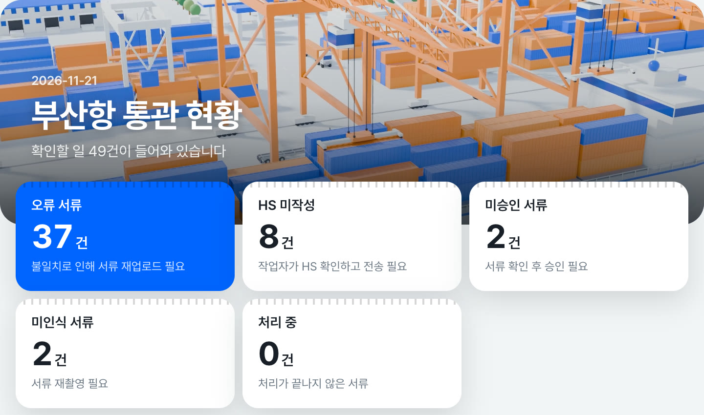
대시보드 · 사람이 할 일만 모아 보여 줌
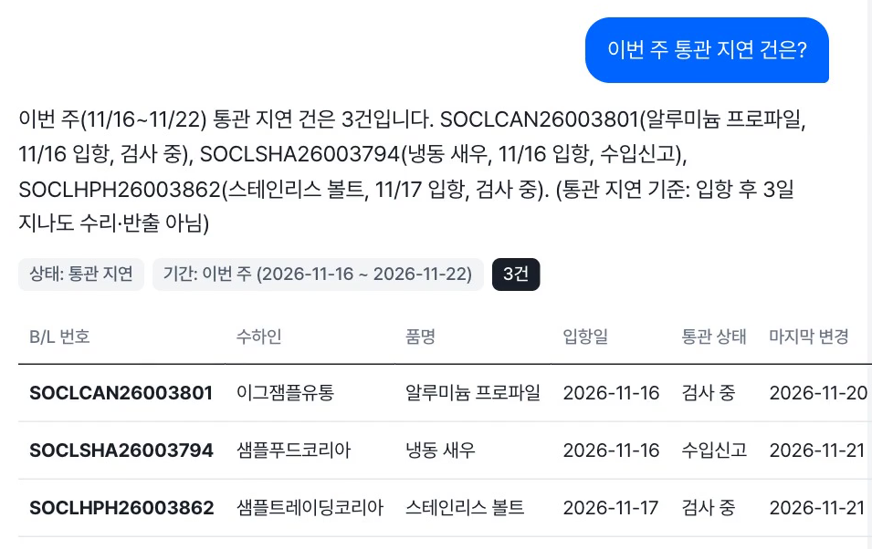
채팅 · 조회 조건과 결과를 함께
작업자는 올리기만, 관리자는 사람이 볼 건만.
거래처와 관세사는 근거가 붙은 요청을 받습니다.
분류·읽기·현황 질문은 기능별 측정, 오류·HS는 개발용 75세트 끝까지 1회 · 자동 등록은 두 건을 이어 돌려 확인 · 비용은 토큰 실측 × 직접 요금 어림 · 등록은 가상 WMS, 통관 현황은 시연용 화물 기록
부록 2